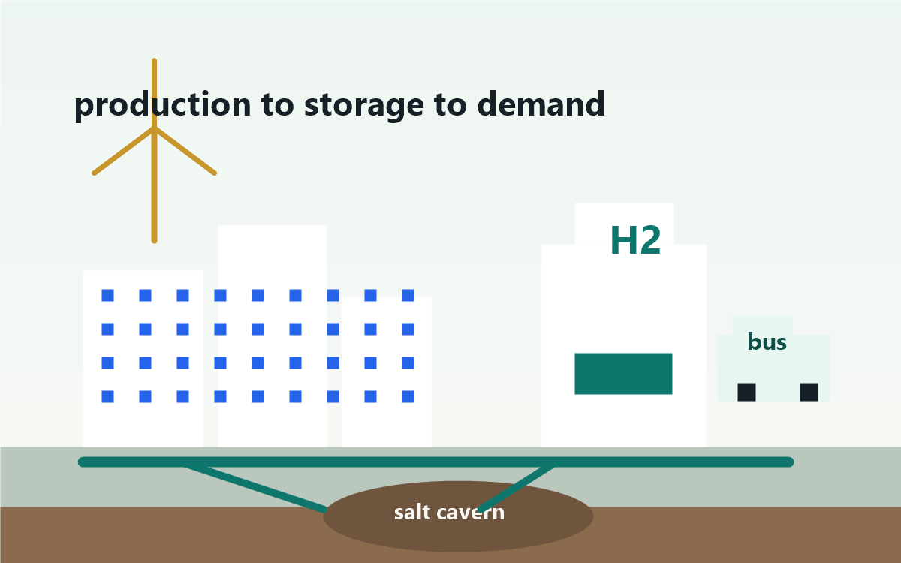

Where does hydrogen actually belong?
Hydrogen is most useful when high heat, long-duration storage, fast refueling, heavy transport, or industrial feedstocks matter more than conversion efficiency.
Page 3
This page studies hydrogen as infrastructure: energy input, conversion into H2, storage, delivery logistics, safety, demand, energy transfer into usable output, and long-term adaptability. The central question is whether a city should build hydrogen everywhere, or use it only where its properties solve problems that electricity alone cannot solve.
Hydrogen is most useful when high heat, long-duration storage, fast refueling, heavy transport, or industrial feedstocks matter more than conversion efficiency.
The strongest infrastructure pattern is a hub: production, storage, pipelines, depots, industry, and backup power close enough that delivery distances stay short and conversion losses can be measured clearly.
Cost per useful unit of energy, emissions per kg H2, energy kept from input to final use, storage duration, conversion loss, leak risk, refueling uptime, and whether demand is stable enough to pay for assets.
Hydrogen infrastructure should be planned like a specialized high-capacity upgrade lane. It is not the most efficient way to turn ordinary electricity into everyday usable energy, but it can be valuable where cities need seasonal storage, resilient backup, industrial heat, port fuel, freight corridors, or buses that cannot pause for long charging windows.
Visual proof board
The city-scale case for hydrogen is strongest when the visual picture is honest: energy is lost at each conversion, but the system can still be valuable for duration, resilience, high heat, and centralized heavy use.
This is the main proof behind the infrastructure conclusion. Hydrogen is not the best daily electricity pathway, but it can justify the losses when the city needs long-duration storage, emergency backup, or fuel for heavy systems that cannot easily plug in.
Scattered demand means expensive stations, storage, safety systems, and staff may sit underused. That raises the cost of each useful unit of energy.
A port, transit depot, industrial user, and backup-power site can share production, delivery, storage, training, and emergency planning.
The strongest infrastructure plan is not hydrogen everywhere. It is hydrogen where the losses are justified by high-value needs that batteries, wires, or ordinary storage cannot serve as well.
Energy flow visual
This is the clearest infrastructure reason to use hydrogen selectively. The city gains storage duration and fuel flexibility, but each conversion turns part of the original energy into heat, compression work, equipment load, or other losses.
Figure takeaway: transfer means energy-to-usage, not simply moving the element. A city may lose more than half the original electricity in a hydrogen-to-electricity loop, so hydrogen should be reserved for storage duration, heavy demand, backup resilience, or industrial needs that justify the loss.
Narrative behind the study
Electricity already has a massive delivery system: wires, substations, transformers, meters, and standards. Hydrogen needs a different system. A city has to decide where the hydrogen is made, how it is purified, where it is compressed, how much can be stored, how it is delivered, who uses it, and who maintains the safety systems. That means hydrogen infrastructure is not a simple fuel swap. It is a new logistics network that must be justified by specific demand.
In this report, transfer means energy moving from its original source into useful output, not simply moving the hydrogen molecule from one place to another. Electricity, natural gas, or coal energy first becomes hydrogen. Then hydrogen may be compressed or liquefied for storage. Finally it becomes electricity, heat, vehicle motion, or industrial chemical value. Each conversion spends energy and adds cost. Physical trucking, pipelines, and tankers are delivery logistics; they matter, but the bigger question is how much original energy survives by the time the user gets useful work.
A hydrogen cluster works because several users can share the same production, storage, and delivery assets. A port, industrial district, bus depot, rail yard, and backup power site can create enough demand to keep equipment used. High utilization lowers the useful-energy cost of hydrogen. It also makes safety training, emergency planning, and maintenance more consistent. The infrastructure story therefore begins with places that already need fuel, heat, freight service, or resilience, not with every household or every car.
City integration model
The best city plan does not send hydrogen everywhere. It clusters production, storage, and demand around ports, bus depots, industrial zones, hospitals, data centers, rail yards, and power plants that need resilience or high heat.
Best for hospitals, universities, airports, and data centers that value long-duration backup. Use green hydrogen where clean power is available; store as compressed gas or through a nearby supplier contract.

Infrastructure chain
Hydrogen only becomes usable energy after a chain of systems works together. This chain separates energy transfer into useful output from physical delivery, because those are different problems with different losses.
Electrolysers, reformers, or gasifiers make H2. The production method sets the emissions profile before the city stores hydrogen or converts it into useful output.
Hydrogen must be purified, dried, compressed, liquefied, or converted into a carrier such as ammonia or methanol depending on the use case.
Tanks work for smaller sites; salt caverns and geologic storage are better for seasonal or regional scale where geology allows it.
Pipelines fit large stable demand. Tube trailers, liquid tankers, ships, rail, or carriers fit smaller, emerging, or long-distance markets. This is movement of fuel, not the energy-transfer calculation.
Fuel cells, turbines, boilers, industrial processes, buses, trucks, and port equipment convert stored hydrogen into electricity, heat, motion, or chemical products. This is where the final useful-energy percentage is decided.
Infrastructure case visual
This visual break connects the page's infrastructure chain to a real city-scale pattern: renewable electricity, production, storage tanks, port fuel demand, and industrial users are close enough to share equipment instead of duplicating it across the whole city.
Coal or lignite gasification. Accessible in coal regions, but highest carbon burden.
Higher carbonNatural gas reforming without carbon capture. Cheapest in many places, but emissions stay upstream.
Higher carbonNatural gas plus carbon capture and storage. Climate value depends on capture and leakage data.
Lower carbon if verifiedRenewable electricity and water. Best long-term pathway when clean power is additional and abundant.
Lowest carbonFigure takeaway: the port hub explains why the site argues for clusters instead of universal rollout. The color strip shows that the same infrastructure can have very different climate value depending on what fuels the hydrogen supply.
Refueling infrastructure visual
This diagram separates the hydrogen system from the transport system. Electricity becomes hydrogen, hydrogen is conditioned and stored, then refueling infrastructure connects the fuel to trucks, buses, and cars.
Figure takeaway: city implementation is a chain, not a single purchase. The vehicle benefit appears only after generation, electrolysis, storage, delivery logistics, refueling uptime, and final-use conversion work together.
The price at the production plant is only the beginning. Compression, storage, final conversion, station operation, downtime, and delivery logistics determine whether the user can afford the useful energy hydrogen provides.
From input energy to final use, hydrogen loses more energy than batteries in daily cycling. Its advantage is that it can store energy for longer periods and at larger scale where batteries become expensive or impractical.
Pipelines, caverns, depots, and terminals make sense only when there are anchor users. Without stable demand, expensive infrastructure can sit underused.
Energy kept and lost
Here, transfer means the pathway from input energy to usable output: electricity, heat, motion, backup power, or industrial feedstock value. Percentages vary by equipment, pressure, utilization, and whether waste heat is useful. Physical delivery is a separate logistics cost.
Electrolysis turns electricity into chemical energy. The loss is acceptable for long-duration storage but inefficient for daily battery-style cycling.
Compression is usually less costly than liquefaction, but high-pressure tanks and compressors add capital cost and safety requirements.
Cooling to about -253 C improves density, but the liquefaction plant consumes a major share of the fuel's energy.
A fuel cell converts hydrogen's chemical energy into electricity. Useful heat can improve the total value if the site can capture it.
Electrolysis, storage, and fuel-cell or turbine conversion compound losses. Hydrogen competes better on duration and scale than on efficiency.
Hydrogen can refuel quickly and carry energy for long routes, but making H2, storing it, and converting it back to electricity loses more energy than direct battery charging.
Science layer
Hydrogen infrastructure is governed by thermodynamics and electrochemistry. The city is not only paying for tanks and stations; it is paying for the physical work of changing energy from one form to another, then keeping that fuel useful until the moment it is converted back into work.
electrical energy -> chemical energy + heat losses
In theory, water splitting has a minimum energy requirement. In real equipment, extra voltage is needed to push reactions fast enough, move ions through membranes, overcome resistance, pump water, dry gases, and control heat. That extra energy becomes loss.
work input -> high-pressure H2
Hydrogen gas has low energy density by volume, so a practical tank usually needs high pressure. Compressors do mechanical work on the gas, heat is produced, and strong vessels are required. The physics improves volume density but adds cost, equipment, and safety design.
H2 gas + refrigeration -> liquid H2
Liquefaction makes hydrogen denser, but it forces the gas into a cryogenic state near absolute zero. Refrigeration must remove heat repeatedly, insulation must limit boil-off, and some fuel can be lost as vapor. That is why liquid hydrogen is valuable only when density is worth the energy cost.
H2 chemical energy -> electricity + heat
A fuel cell avoids combustion, but it still has activation losses, resistance losses, mass-transport limits, pumps, cooling, and controls. Some of hydrogen's chemical energy becomes useful electricity, and some becomes heat. If a building can use the heat, the total system value improves.
eta_total = eta_make x eta_store x eta_convert
Infrastructure loss is not one single penalty. If electrolysis keeps about 68% of the input electricity, compression and storage keep about 90%, and the fuel cell keeps about 55%, the round trip is about 0.68 x 0.90 x 0.55, or 34%. That math is why hydrogen should be reserved for jobs where its storage duration, fuel properties, or industrial chemistry justify the conversion losses.
PV = nRT; higher P puts more H2 in the same tank volume
Compression does not add chemical energy to hydrogen. It spends mechanical energy to increase pressure so more moles fit into the same volume. Compressors heat the gas, need cooling, and require strong vessels and valves. The city gains storage density, but pays with electricity, equipment cost, inspections, and safety design.
normal boiling point of H2: about -253 C
Refrigeration gets harder as the target temperature approaches absolute zero, so liquid hydrogen costs much more energy than ordinary cooling. The benefit is higher volume density; the penalty is liquefaction energy, insulated tanks, boil-off control, and material stress. That makes liquid H2 scientific only when density is worth the thermodynamic cost.
short-cycle electricity favors batteries; long-duration molecules can favor H2
Batteries keep more input electricity during daily charge-discharge cycles. Hydrogen becomes more competitive when the city needs weeks of storage, heavy-duty refueling, high-temperature heat, ammonia, steelmaking, port equipment, or backup energy that must sit ready for long periods. The decision is therefore a physics-and-use-case match, not a general claim that hydrogen is always clean or always inefficient.
Study scenarios
A useful hydrogen study should compare scenarios by cost, emissions, energy expenditure, difficulty, and future-readiness, not just whether the technology works.
Best first step for cities because buses, maintenance, fuel demand, safety training, and refueling can be centralized.
Strongest large-scale candidate because existing hydrogen users, freight, shipping, and chemical-handling experience are often clustered.
Hydrogen can store large amounts of energy for long durations, but round-trip efficiency is much lower than batteries.
Scenario narrative
A transit depot is the cleanest first test because the city can see the whole system in one place. Hydrogen arrives or is made onsite, is compressed and stored, fills buses on schedule, and then gets judged by real service: missed routes, refueling time, maintenance, driver experience, winter range, and fuel cost. If the depot cannot make the numbers work, a wider rollout will be even harder. If it succeeds, it gives the city a trained workforce, safety procedures, demand data, and a reason to expand.
Industrial districts, ports, and rail yards are stronger candidates because they already handle fuel, operate heavy equipment, and need large amounts of energy. A single hydrogen user may not justify pipelines, storage, or delivery contracts, but several anchor users can share those costs. The hub model also makes emissions tracking easier because production, delivery, and end use are concentrated. This is where hydrogen starts to look like infrastructure rather than a demonstration project.
Batteries are excellent for short cycles, but they are not always the best tool for storing large amounts of energy across weeks or seasons. Hydrogen can absorb surplus renewable electricity, sit in tanks or suitable geologic storage, and later support backup power or grid balancing. The tradeoff is efficiency: much of the original electricity is lost by the time hydrogen becomes electricity again. The city has to decide whether the resilience and duration are worth that loss.
| Option | Best scale | Storage method | Delivery method | Pros | Cons |
|---|---|---|---|---|---|
| Transit depot | City fleet | Compressed gas, sometimes liquid delivery | Truck delivery or onsite electrolyser | Predictable demand, centralized safety systems, fast bus turnaround | Fuel cost, station cost, backup supply needed |
| Industrial hub | Regional | Pipeline-connected tanks or salt caverns | Dedicated pipeline | High utilization, nearby offtakers, easier carbon tracking | Requires large anchor users and permitting |
| Port and rail | Freight corridor | Compressed H2, liquid H2, ammonia, or methanol | Pipeline, ship, rail, or truck | Targets hard-to-electrify freight and bunkering | Fuel handling complexity and international standards |
| Power resilience | Campus to metro | Compressed tanks or geologic storage | Microgrid or peaker plant supply | Long-duration backup, seasonal storage potential | Low round-trip efficiency and high equipment cost |
| Gas-grid blending | Limited utility pilots | Existing gas network with constraints | Blended pipeline gas | Uses existing assets in small percentages | Appliance limits, embrittlement concerns, modest emissions benefit |
| Type | Cost position | Energy expenditure | Storage and energy transfer | Implementation access | 50-year fit |
|---|---|---|---|---|---|
| Green | Higher today in many regions, but most aligned with falling renewable and electrolyser costs. | High conversion demand: about 35-39% production loss, plus compression or liquefaction losses. | Onsite electrolysers, compressed tanks, salt caverns, pipelines, ammonia, or liquid carriers. | Best where clean power, water, industrial demand, and storage can be co-located. | Strong. Best match for renewable-heavy grids, seasonal storage, and hard-to-electrify sectors. |
| Grey | Usually cheaper because it uses mature fossil-gas reforming. | Moderate production loss, roughly 25-35%, but emissions are uncaptured. | Uses the same compressed, liquid, pipeline, or carrier options as other hydrogen. | Easiest to implement because gas infrastructure and reformers already exist. | Weak. It helps build demand but does not prepare a city for deep decarbonization. |
| Blue | Often cheaper than green near fossil gas and CO2 storage networks. | Higher loss than grey: roughly 30-45% after capture and CO2 compression penalties. | Best in hubs with dedicated pipelines, large tanks, or geologic storage. | Hard outside industrial clusters because it needs gas, H2 users, CO2 transport, and verified storage. | Medium. Useful as a bridge if carbon accounting is strict and demand is real. |
| Brown | Can be cheap where coal is cheap, but external climate costs are high. | Worst production loss, roughly 40-55%, before adding storage and final-use conversion losses. | Compressed gas, liquid hydrogen, or pipeline if infrastructure exists. | Accessible in coal regions, but hard to make clean or publicly acceptable. | Poor. It risks locking a city into the oldest emissions pathway. |
Green hydrogen pairs with renewables and seasonal storage. It should be aimed at uses that cannot be cheaply electrified directly.
Grey hydrogen can support existing industrial demand, but it should not be the endpoint for future infrastructure because its production emissions remain uncaptured.
Blue hydrogen makes the most sense where gas, CO2 pipelines, verified storage, and industrial demand already overlap. It needs strict methane and capture accounting.
Brown hydrogen can feed industrial equipment, but every infrastructure dollar risks locking in coal emissions. It is least compatible with long-term sustainability goals.
50-year pathway narrative
Green hydrogen fits a future city because it can grow with renewable electricity. As solar, wind, storage, and electrolysers improve, the same hydrogen network can become cleaner over time. The city still has to spend energy to make and store the fuel, so green hydrogen should not replace direct electrification where wires and batteries work well. Its best future role is as a flexible tool for hard sectors: heavy transport, seasonal storage, industrial heat, ammonia, steel, ports, and resilient backup.
Grey hydrogen can help a city learn how to store, deliver, and convert hydrogen because it is accessible today. The danger is that infrastructure built around cheap fossil hydrogen can create customers who depend on a high-emission supply. If the city uses grey hydrogen as a temporary stepping stone, it needs a clear replacement plan, emissions accounting, and contracts that allow the fuel source to shift. Without that plan, grey hydrogen becomes a delay rather than a bridge.
Blue hydrogen can be useful in industrial clusters that already have natural gas, hydrogen demand, CO2 pipelines, and verified storage geology. Its long-term value depends on whether captured carbon stays stored and whether methane leakage stays low. That makes monitoring part of the infrastructure itself. A blue hydrogen hub should be judged by measured emissions, not by the label. If the data are strong, it can reduce near-term emissions. If the data are weak, it preserves fossil dependence with added complexity.
Brown hydrogen may be accessible in coal regions, but its infrastructure points the city backward. Coal gasification has heavy emissions, high cleanup needs, and poor alignment with long-term climate goals. Even if the upfront fuel looks cheap, the city inherits future costs: pollution controls, public acceptance problems, carbon liability, and eventual replacement. For a 50-year infrastructure plan, brown hydrogen has the weakest case because it spends money on the pathway least likely to survive a low-carbon transition.
50-year infrastructure conclusion
Hydrogen can be a future-ready part of infrastructure, but only when the city treats it as a targeted system with clear demand. The safest long-term plan is not hydrogen everywhere; it is hydrogen where scale, storage duration, industrial need, or freight and transit uptime justify the energy-transfer losses.
Transit depots, industrial hubs, ports, logistics corridors, and backup systems with clear users.
Citywide retail hydrogen before demand exists, or hydrogen power where batteries and direct electrification are cheaper.
Useful-energy cost and energy loss. Hydrogen becomes expensive when production, compression, storage, final-use conversion, and delivery logistics are all counted.
Future adaptability. Hydrogen can connect clean power, heavy industry, freight, resilient backup, and seasonal storage in one shared infrastructure system.
Final verdict
The full evidence points to one conclusion: hydrogen should not be sold as a replacement for every wire, battery, or fuel. Its future strength is narrower and more important. Hydrogen is most valuable where a city needs a molecule: long-duration storage, high-temperature industry, ammonia or steel production, heavy freight, port operations, emergency backup, and transit routes where fast refueling matters. It is weakest where the job is simple daily electricity, because direct electrification usually keeps more of the original energy at lower cost.
That reveals hydrogen's real capability. It is not magic clean energy; it is an adaptable energy carrier whose usefulness depends on the pathway that makes it, the infrastructure that stores it, and the final use that spends it. A future-ready city should electrify first, then build clean hydrogen clusters where the science, cost, safety, and demand all prove that the energy losses are worth paying.
Full report
The main infrastructure question is not whether hydrogen can work. It can work technically. The question is whether a city can justify the full chain required to make it useful: production, purification, compression or liquefaction, storage, delivery, dispensing, final-use conversion, safety systems, maintenance, and long-term demand. In this report, energy transfer means the path from original input energy to useful output, not simply moving hydrogen from place to place. A city should not treat hydrogen like a universal replacement for electricity. Instead, it should study where hydrogen solves infrastructure problems that electricity alone does not solve well, such as long-duration storage, high-temperature industry, heavy transport, freight corridors, backup power, and fuel for fleets that cannot pause for long charging periods.
The most realistic integration method is a hub-and-corridor model. In this model, hydrogen production or delivery is placed near concentrated demand: transit depots, ports, industrial zones, rail yards, airports, data centers, hospitals, and backup power sites. This reduces the need to deliver hydrogen over long distances and makes safety easier to manage. A city could begin with a transit depot or industrial hub, add compressed storage and refueling, then expand to pipelines or larger storage only if demand grows. This approach is safer and more financially realistic than building public hydrogen stations everywhere before enough users exist.
Hydrogen infrastructure is expensive because every stage requires specialized equipment and each energy-transfer step loses some usable value. Electrolysis loses a significant share of the input electricity before hydrogen is even stored. Compression can keep roughly 85-95% of the hydrogen energy but requires strong vessels and compressors. Liquefaction improves volume density but can keep only about 60-75% after cooling losses. A fuel cell may keep roughly 45-60% of the hydrogen's chemical energy as electricity, and the full electricity-to-hydrogen-to-electricity round trip can fall to roughly 30-45%. Storage can use compressed tanks for small and medium sites, liquid hydrogen for higher density, chemical carriers for long-distance trade, and salt caverns or geologic storage for large seasonal systems where geology allows it.
The major difficulties are cost, energy loss, safety, infrastructure coordination, and demand uncertainty. Hydrogen is flammable, difficult to contain, and often stored under high pressure or very low temperatures. Pipelines and tanks must be compatible with hydrogen, and leak detection must be designed into facilities. Financially, hydrogen infrastructure can become stranded if vehicles, industrial users, or power customers do not appear at the expected scale. Environmentally, hydrogen only helps if its production pathway is low-carbon. Grey or brown hydrogen infrastructure may build demand, but it can also lock cities into fossil supply chains unless a transition plan exists.
Over the next 50 years, hydrogen is most likely to be valuable as specialized infrastructure rather than everyday infrastructure for everything. It can help cities adapt to renewable-heavy grids, seasonal energy needs, industrial decarbonization, port operations, freight, transit, and resilience planning. Its future value is similar to a computer upgrade path: the infrastructure must be flexible enough to handle future demand without locking the city into the wrong technology. The best plan is to electrify directly wherever possible, then use clean hydrogen where batteries, direct grid power, or conventional storage cannot meet the scale, duration, temperature, or refueling requirements.
Sources
These references support the infrastructure argument: hydrogen can scale, but only when cost, conversion loss, storage design, and concentrated demand make the full chain worthwhile.
IEA's 2025 infrastructure analysis supports the site's cluster strategy: deployment depends on demand creation, project risk, ports, hubs, and coordinated infrastructure.
IEA hydrogen trade and infrastructureDOE delivery resources explain the systems needed to move hydrogen from production into useful service, including compression, storage, pipelines, trucks, and fueling assets.
DOE hydrogen deliveryDOE energy-storage analysis supports hydrogen's role in long-duration and large-scale storage, while the site's Sankey visual shows why daily round-trip electricity is a weaker case.
DOE hydrogen energy storage analysisDOE storage and H2Tools safety data support the need for pressure-rated tanks, cryogenic planning, leak detection, ventilation, and compatible materials.
DOE hydrogen storage